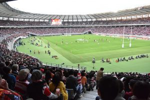

Your Most Awaited Sports Event is Here!Plan to Visit It
For any sports lover, it is very important that at least once in a lifetime, they experience a game.Football gets the largest share of sports fans, followed by cricket and hockey.So, these are the obvious picks for attending a grand game.However, some prefer calmer and more settling sports such as chess, tennis, and billiards.Whatever it is that you fancy, we know you want to experience it live!
Australians are ever-so enthusiastic about a good game.Thus, it would be a shame if you didn’t try and attend your favorite sport!If you have set your heart upon seeing it for yourself, we would like to help you get more clarity on how to attend your favorite sports event.The following are a few things you need to take care of:
1.Figure out the venue and the timings:
This may sound like a bit of obvious advice, but you would be surprised to know a whopping 40% of sports fans who have attended events are often late or confused about the stadiums and their designated seating area.Thus, it is best to ask the organizers.They often have elaborate seating plans mentioned on their website, along with timings.You could still contact them, in case you would like more clarity.It is best to leave a little early for the game, keeping in mind that there may be traffic on the route.
2.Confirm the number of people ASAP:
Be it a travel plan or a simple outing, there is always someone who cancels and bails out on the whole group.Thus, to ensure that these spoilers don’t spoil your big day, it’s better to have a clear picture and a confirmation from everyone who wants to come.This is important for your financial well being too.What if you end up arranging for expensive tickets, only to find out that a few people ‘changed their minds’!That’s annoying!You should ideally secure your own ticket, accommodation, and other important bookings.
3.Score the tickets:
This is the part where you need to be faster than Flash!Most tickets that come out online get sold within a few days.The offline tickets may be rigged at higher prices to pay the middleman!So, how does one get good seats at affordable rates?You can always count on trusted service providers such as Sports Where I Am for all your tickets and hotel bookings.
4.How are you going to get there?
Do you intend on driving all the way there, or would you need to take a train?In case, it’s a grand event happening on a global scale, you may be required to sort out your flights well in advance.Thus, it always helps if you are decided on how are you going to reach there.
5.A little extra cash:
While events happening around you may not cost much, any event that happens in a location you haven’t been to or far from your home has the potential of burning a hole in your pocket.For instance, if a sports league happening in Switzerland or the UK is your dream event, be prepared to spend a lot of hotels, food, and general public commute options.You should read about the cost of living and traveling in the area you intend to visit.Furthermore, if you plan on coupling your sports day with clubbing at night or shopping during the rest of the trip, you may need to carry an adequate sum according to your plans besides the game.We hope this article helps you inch closer to your dream event.
[bsa_pro_ad_space id=4]
Share on Facebook Tweet Follow us
We all will head out the door, and hop in our cars only to forget the most important items.Having the right accessories means a lot when lost on what to buy.We drive our cars daily on the road.It’s best to have good accessories that can assist in your travels.Don’t find yourself struggling, and wishing you had bought an item that can solve your car troubles.
Look for things that make sense and are easy to use.The goal with any car accessories is that it solves a problem and sets your nerves at ease.You want to take advantage of the benefits.There’s no sense buying accessories that don’t hold up either.Research is the key to getting the best car accessories you can.Lean on friends and family to see what they have in their cars.Use the internet to see which ones fit best with your vehicle.If you’re still lost, consider these essential accessories you should have in place with your daily travels.
Navigation
Though you can download a list of applications for directions, it never hurts to buy one navigation gadget you can attach to your dashboard.This way you don’t have to fiddle with your phone when you drive.This is not only dangerous, you might cause a wreck.Think about when you drive each day how this one gadget can make life easier.We all jump in our cars thinking we have the directions down.It only takes a few minutes were we are lost and driving around in circles.This is no good, especially if you’re on the way to a job interview.Use your navigation device to program all of the frequent places you find yourself traveling to daily.You’ll be happy you did once you realize all it takes is the touch of a button.This can set you on your way without any hassles.A navigation device can save you from entering bad areas and keep you safely on the main roads.
Charger
Who doesn’t need a charger for their smartphone or device they have in their car?Car chargers are a lifesaver.We’ve all been in that position where our phone dies.Soon the problem escalates because you can’t call anyone to rescue you for a flat tire or an emergency.Keep a charger in your car at all times.There are new SUVs that have USB ports that work with various types of phones.Never leave your house when your battery is low.It’s something we all do.It can cause a lot of problems if we’re not careful.When you have a car charger, it only makes the situation better.Charging our phone is crucial when you have kids to worry about.You might need to call ahead to the doctor with a screaming or crying child who’s injured in the backseat.Know that having a car charger is more than just another gadget cluttering up your car.It’s one of the most essential accessories you can buy.
Tire Pump
No one said you were a mechanic and can fix a car on the spot.When our cars malfunction, there might be a time you’ll have to handle the repair.Buy the best tire pump you can find.Our tires are often the first to go when the tread is bad.Too many of us don’t do regular maintenance on our car tires when needed.We might change them once out of three years.It’s not until you decide to take that long road trip, you realize a tire pump can save lots of issues.If you’re faced with changing a tire, you will also need to make sure it has air.Gas stations on empty roads are hard to find when the exit is another 40 miles away.Use your tire pump to put air in your tires before leaving your house.
[bsa_pro_ad_space id=4]
Posted On: 2019-11-27T00:00:00
Posted By: Craig Evans



Content Date: 2019-11-27
Download Date: 2021-07-08
Document ID: L0C04D6S5